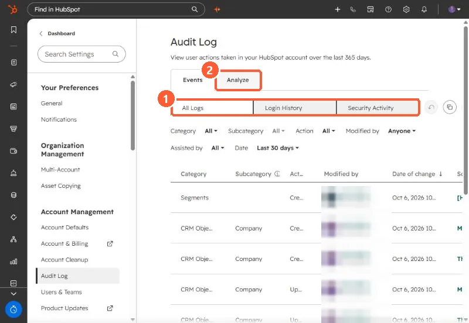

Short answer
Settings, Audit Log shows user actions in your account. It records actions taken by HubSpot users, filtered by category, action, user and date. Starter and Professional accounts can filter by Login and Security Activity. Enterprise adds categories such as approvals, content and workflows. The Analyze tab summarizes daily logins, deletions, exports and reports.
1. The log
Go to Settings > Audit Log. The Events tab lists changes with category, subcategory, action, who made it and when.


2. What your tier sees
- Logins (including mobile) and security activity: all tiers.
- Approvals, communication preference changes and more categories: Enterprise.
- Content activity export needs Content Hub Starter or above. Retention is 365 days on Starter and Professional and unlimited on Enterprise.
HubSpot says the log only records actions taken by HubSpot users, so changes made by integrations may not appear.
3. Analyze
The Analyze tab shows daily totals for logins, deletions, exports and reports, with links into the filtered log. A spike in exports is worth a question.